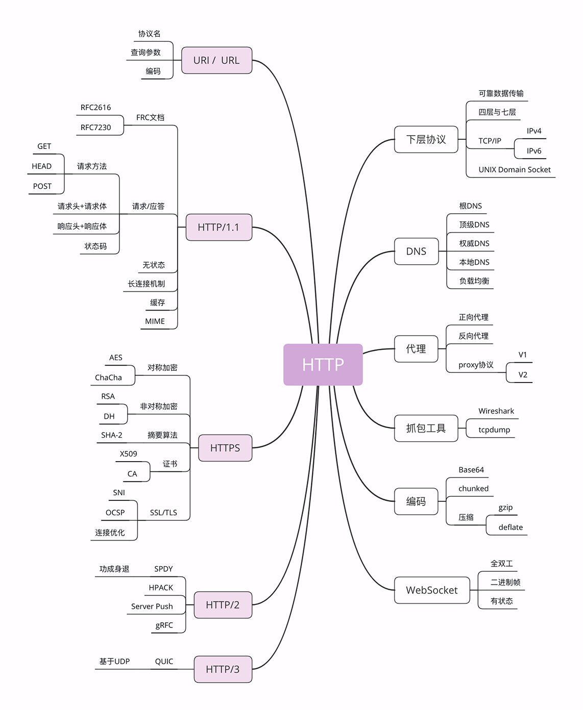
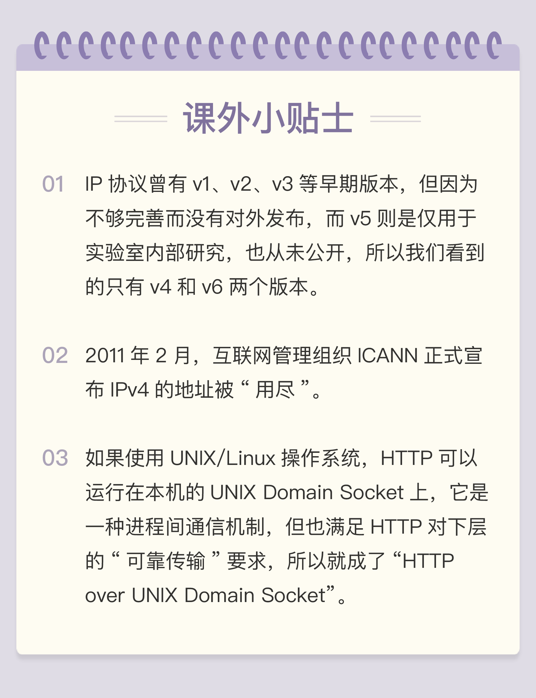

- 00 开篇词｜To Be a HTTP Hero.md
- 01 时势与英雄：HTTP的前世今生.md
- 02 HTTP是什么？HTTP又不是什么？.md
- 03 HTTP世界全览（上）：与HTTP相关的各种概念.md
- 04 HTTP世界全览（下）：与HTTP相关的各种协议.md
- 05 常说的“四层”和“七层”到底是什么？“五层”“六层”哪去了？.md
- 06 域名里有哪些门道？.md
- 07 自己动手，搭建HTTP实验环境.md
- 08 键入网址再按下回车，后面究竟发生了什么？.md
- 09 HTTP报文是什么样子的？.md
- 10 应该如何理解请求方法？.md
- 11 你能写出正确的网址吗？.md
- 12 响应状态码该怎么用？.md
- 13 HTTP有哪些特点？.md
- 14 HTTP有哪些优点？又有哪些缺点？.md
- 15 海纳百川：HTTP的实体数据.md
- 16 把大象装进冰箱：HTTP传输大文件的方法.md
- 17 排队也要讲效率：HTTP的连接管理.md
- 18 四通八达：HTTP的重定向和跳转.md
- 19 让我知道你是谁：HTTP的Cookie机制.md
- 20 生鲜速递：HTTP的缓存控制.md
- 21 良心中间商：HTTP的代理服务.md
- 22 冷链周转：HTTP的缓存代理.md
- 23 HTTPS是什么？SSLTLS又是什么？.md
- 24 固若金汤的根本（上）：对称加密与非对称加密.md
- 25 固若金汤的根本（下）：数字签名与证书.md
- 26 信任始于握手：TLS1.2连接过程解析.md
- 27 更好更快的握手：TLS1.3特性解析.md
- 28 连接太慢该怎么办：HTTPS的优化.md
- 29 我应该迁移到HTTPS吗？.md
- 30 时代之风（上）：HTTP2特性概览.md
- 31 时代之风（下）：HTTP2内核剖析.md
- 32 未来之路：HTTP3展望.md
- 33 我应该迁移到HTTP2吗？.md
- 34 Nginx：高性能的Web服务器.md
- 35 OpenResty：更灵活的Web服务器.md
- 36 WAF：保护我们的网络服务.md
- 37 CDN：加速我们的网络服务.md
- 38 WebSocket：沙盒里的TCP.md
- 39 HTTP性能优化面面观（上）.md
- 40 HTTP性能优化面面观（下）.md
- 结束语 做兴趣使然的Hero.md
04 HTTP世界全览（下）：与HTTP相关的各种协议
在上一讲中，我介绍了与 HTTP 相关的浏览器、服务器、CDN、网络爬虫等应用技术。
今天要讲的则是比较偏向于理论的各种 HTTP 相关协议，重点是 TCP/IP、DNS、URI、HTTPS 等，希望能够帮你理清楚它们与 HTTP 的关系。
同样的，我还是画了一张详细的思维导图，你可以点击后仔细查看。

TCP/IP
TCP/IP 协议是目前网络世界“事实上”的标准通信协议，即使你没有用过也一定听说过，因为它太著名了。
TCP/IP 协议实际上是一系列网络通信协议的统称，其中最核心的两个协议是TCP和IP，其他的还有 UDP、ICMP、ARP 等等，共同构成了一个复杂但有层次的协议栈。
这个协议栈有四层，最上层是“应用层”，最下层是“链接层”，TCP 和 IP 则在中间：TCP 属于“传输层”，IP 属于“网际层”。协议的层级关系模型非常重要，我会在下一讲中再专门讲解，这里先暂时放一放。
IP 协议是“Internet Protocol”的缩写，主要目的是解决寻址和路由问题，以及如何在两点间传送数据包。IP 协议使用“IP 地址”的概念来定位互联网上的每一台计算机。可以对比一下现实中的电话系统，你拿着的手机相当于互联网上的计算机，而要打电话就必须接入电话网，由通信公司给你分配一个号码，这个号码就相当于 IP 地址。
现在我们使用的 IP 协议大多数是 v4 版，地址是四个用“.”分隔的数字，例如“192.168.0.1”，总共有 2^32，大约 42 亿个可以分配的地址。看上去好像很多，但互联网的快速发展让地址的分配管理很快就“捉襟见肘”。所以，就又出现了 v6 版，使用 8 组“:”分隔的数字作为地址，容量扩大了很多，有 2^128 个，在未来的几十年里应该是足够用了。
TCP 协议是“Transmission Control Protocol”的缩写，意思是“传输控制协议”，它位于 IP 协议之上，基于 IP 协议提供可靠的、字节流形式的通信，是 HTTP 协议得以实现的基础。
“可靠”是指保证数据不丢失，“字节流”是指保证数据完整，所以在 TCP 协议的两端可以如同操作文件一样访问传输的数据，就像是读写在一个密闭的管道里“流动”的字节。
在[第 2 讲]时我曾经说过，HTTP 是一个"传输协议"，但它不关心寻址、路由、数据完整性等传输细节，而要求这些工作都由下层来处理。因为互联网上最流行的是 TCP/IP 协议，而它刚好满足 HTTP 的要求，所以互联网上的 HTTP 协议就运行在了 TCP/IP 上，HTTP 也就可以更准确地称为“HTTP over TCP/IP”。
DNS
在 TCP/IP 协议中使用 IP 地址来标识计算机，数字形式的地址对于计算机来说是方便了，但对于人类来说却既难以记忆又难以输入。
于是“域名系统”（Domain Name System）出现了，用有意义的名字来作为 IP 地址的等价替代。设想一下，你是愿意记“95.211.80.227”这样枯燥的数字，还是“nginx.org”这样的词组呢？
在 DNS 中，“域名”（Domain Name）又称为“主机名”（Host），为了更好地标记不同国家或组织的主机，让名字更好记，所以被设计成了一个有层次的结构。
域名用“.”分隔成多个单词，级别从左到右逐级升高，最右边的被称为“顶级域名”。对于顶级域名，可能你随口就能说出几个，例如表示商业公司的“com”、表示教育机构的“edu”，表示国家的“cn”“uk”等，买火车票时的域名还记得吗？是“www.12306.cn”。

但想要使用 TCP/IP 协议来通信仍然要使用 IP 地址，所以需要把域名做一个转换，“映射”到它的真实 IP，这就是所谓的“域名解析”。
继续用刚才的打电话做个比喻，你想要打电话给小明，但不知道电话号码，就得在手机里的号码簿里一项一项地找，直到找到小明那一条记录，然后才能查到号码。这里的“小明”就相当于域名，而“电话号码”就相当于 IP 地址，这个查找的过程就是域名解析。
域名解析的实际操作要比刚才的例子复杂很多，因为互联网上的电脑实在是太多了。目前全世界有 13 组根 DNS 服务器，下面再有许多的顶级 DNS、权威 DNS 和更小的本地 DNS，逐层递归地实现域名查询。
HTTP 协议中并没有明确要求必须使用 DNS，但实际上为了方便访问互联网上的 Web 服务器，通常都会使用 DNS 来定位或标记主机名，间接地把 DNS 与 HTTP 绑在了一起。
URI/URL
有了 TCP/IP 和 DNS，是不是我们就可以任意访问网络上的资源了呢？
还不行，DNS 和 IP 地址只是标记了互联网上的主机，但主机上有那么多文本、图片、页面，到底要找哪一个呢？就像小明管理了一大堆文档，你怎么告诉他是哪个呢？
所以就出现了 URI（Uniform Resource Identifier），中文名称是 统一资源标识符，使用它就能够唯一地标记互联网上资源。
URI 另一个更常用的表现形式是 URL（Uniform Resource Locator）， 统一资源定位符，也就是我们俗称的“网址”，它实际上是 URI 的一个子集，不过因为这两者几乎是相同的，差异不大，所以通常不会做严格的区分。
我就拿 Nginx 网站来举例，看一下 URI 是什么样子的。
http://nginx.org/en/download.html
你可以看到，URI 主要有三个基本的部分构成：
- 协议名：即访问该资源应当使用的协议，在这里是“http”；
- 主机名：即互联网上主机的标记，可以是域名或 IP 地址，在这里是“nginx.org”；
- 路径：即资源在主机上的位置，使用“/”分隔多级目录，在这里是“/en/download.html”。
还是用打电话来做比喻，你通过电话簿找到了小明，让他把昨天做好的宣传文案快递过来。那么这个过程中你就完成了一次 URI 资源访问，“小明”就是“主机名”，“昨天做好的宣传文案”就是“路径”，而“快递”，就是你要访问这个资源的“协议名”。
HTTPS
在 TCP/IP、DNS 和 URI 的“加持”之下，HTTP 协议终于可以自由地穿梭在互联网世界里，顺利地访问任意的网页了，真的是“好生快活”。
但且慢，互联网上不仅有“美女”，还有很多的“野兽”。
假设你打电话找小明要一份广告创意，很不幸，电话被商业间谍给窃听了，他立刻动用种种手段偷窃了你的快递，就在你还在等包裹的时候，他抢先发布了这份广告，给你的公司造成了无形或有形的损失。
有没有什么办法能够防止这种情况的发生呢？确实有。你可以使用“加密”的方法，比如这样打电话：
你：“喂，小明啊，接下来我们改用火星文通话吧。” 小明：“好啊好啊，就用火星文吧。” 你：“巴拉巴拉巴拉巴拉……” 小明：“巴拉巴拉巴拉巴拉……”
如果你和小明说的火星文只有你们两个才懂，那么即使窃听到了这段谈话，他也不会知道你们到底在说什么，也就无从破坏你们的通话过程。
HTTPS 就相当于这个比喻中的“火星文”，它的全称是“HTTP over SSL/TLS”，也就是运行在 SSL/TLS 协议上的 HTTP。
注意它的名字，这里是 SSL/TLS，而不是 TCP/IP，它是一个负责加密通信的安全协议，建立在 TCP/IP 之上，所以也是个可靠的传输协议，可以被用作 HTTP 的下层。
因为 HTTPS 相当于“HTTP+SSL/TLS+TCP/IP”，其中的“HTTP”和“TCP/IP”我们都已经明白了，只要再了解一下 SSL/TLS，HTTPS 也就能够轻松掌握。
SSL 的全称是“Secure Socket Layer”，由网景公司发明，当发展到 3.0 时被标准化，改名为 TLS，即“Transport Layer Security”，但由于历史的原因还是有很多人称之为 SSL/TLS，或者直接简称为 SSL。
SSL 使用了许多密码学最先进的研究成果，综合了对称加密、非对称加密、摘要算法、数字签名、数字证书等技术，能够在不安全的环境中为通信的双方创建出一个秘密的、安全的传输通道，为 HTTP 套上一副坚固的盔甲。
你可以在今后上网时留心看一下浏览器地址栏，如果有一个小锁头标志，那就表明网站启用了安全的 HTTPS 协议，而 URI 里的协议名，也从“http”变成了“https”。
代理
代理（Proxy）是 HTTP 协议中请求方和应答方中间的一个环节，作为“中转站”，既可以转发客户端的请求，也可以转发服务器的应答。
代理有很多的种类，常见的有：
- 匿名代理：完全“隐匿”了被代理的机器，外界看到的只是代理服务器；
- 透明代理：顾名思义，它在传输过程中是“透明开放”的，外界既知道代理，也知道客户端；
- 正向代理：靠近客户端，代表客户端向服务器发送请求；
- 反向代理：靠近服务器端，代表服务器响应客户端的请求；
上一讲提到的 CDN，实际上就是一种代理，它代替源站服务器响应客户端的请求，通常扮演着透明代理和反向代理的角色。
由于代理在传输过程中插入了一个“中间层”，所以可以在这个环节做很多有意思的事情，比如：
- 负载均衡：把访问请求均匀分散到多台机器，实现访问集群化；
- 内容缓存：暂存上下行的数据，减轻后端的压力；
- 安全防护：隐匿 IP, 使用 WAF 等工具抵御网络攻击，保护被代理的机器；
- 数据处理：提供压缩、加密等额外的功能。
关于 HTTP 的代理还有一个特殊的“代理协议”（proxy protocol），它由知名的代理软件 HAProxy 制订，但并不是 RFC 标准，我也会在之后的课程里专门讲解。
小结
这次我介绍了与 HTTP 相关的各种协议，在这里简单小结一下今天的内容。
- TCP/IP 是网络世界最常用的协议，HTTP 通常运行在 TCP/IP 提供的可靠传输基础上；
- DNS 域名是 IP 地址的等价替代，需要用域名解析实现到 IP 地址的映射；
- URI 是用来标记互联网上资源的一个名字，由“协议名 + 主机名 + 路径”构成，俗称 URL；
- HTTPS 相当于“HTTP+SSL/TLS+TCP/IP”，为 HTTP 套了一个安全的外壳；
- 代理是 HTTP 传输过程中的“中转站”，可以实现缓存加速、负载均衡等功能。
经过这两讲的学习，相信你应该对 HTTP 有了一个比较全面的了解，虽然还不是很深入，但已经为后续的学习扫清了障碍。
课下作业
- DNS 与 URI 有什么关系？
- 在讲代理时我特意没有举例说明，你能够用引入一个“小强”的角色，通过打电话来比喻一下吗？
欢迎你通过留言分享答案，与我和其他同学一起讨论。如果你觉得有所收获，欢迎你把文章分享给你的朋友。
